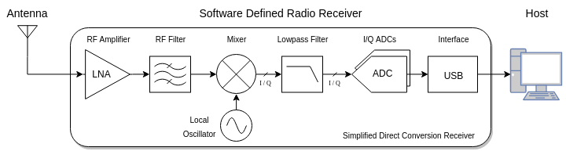
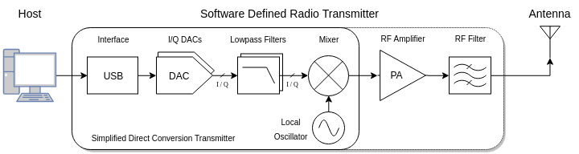
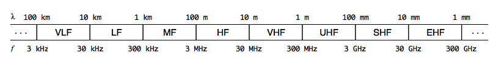

New to SDR?
Table of Contents
Introduction
A software-defined radio is a radio implemented with reconfigurable software, which processes the raw samples of a digitized radio signal. This differs from conventional hardware radios, which employ RF circuits and digital signal processors to implement this processing in a way that is hardwired and hardcoded to their application.
Software-defined radios offer the allure of instant reconfigurability in every dimension: frequency, modulation, and protocol. In theory, you would simply run a different program to implement an entirely different radio — whether it’s a FM broadcast receiver, a UMTS handset, or a Bluetooth device. While there are still real-world limitations to this dream, particularly in antennas and in host processing power, software-defined radio today is a powerful technology for building flexible communication systems, exploring the radio frequency spectrum, and for protocol research and development.
How It Works
A software-defined radio still requires some hardware, but this hardware is relegated to just receiving and transmitting radio signals. In total, a software-defined radio system consists of an antenna, a transmitter and/or receiver, and a host computer.

When receiving, the antenna converts electromagnetic waves into a voltage signal, which is then amplified, translated down from the tuning frequency, and sampled by an SDR receiver. The digital samples are streamed to the host for processing.

When transmitting, the host streams digital samples to an SDR transmitter, which converts them into a voltage signal and translates it to the tuning frequency. The voltage signal may then be further amplified by an external amplifier and filtered by a transmit filter, before it is radiated by the antenna as electromagnetic waves.
Conventional hardware radios today increasingly resemble software-defined radios internally, as more of their processing is pushed into the digital domain, and more complex protocols demand integrated CPUs. However, they are still tightly integrated black boxes that are designed to operate on a specific frequency band, whereas software-defined radios provide a raw sample interface and tend to have a wide tuning range.
Current State
Software-defined radio has become increasingly accessible over the past years with the commoditization of high performance CPUs, and the availability of low cost, high rate analog to digital converters (ADCs) and digital to analog converters (DACs) that are responsible for sampling and synthesizing the radio signal. The inexpensive $20 RTL-SDR dongle — described in more detail below — has also played a role in exposing the technology to many engineers and hobbyists.
However, the software of software-defined radio has yet to catch up to the hardware. Much of it is scattered across esoteric one-off decoding programs, trapped in frameworks bloated with boilerplate and dependencies, or confined to proprietary Windows software. There has been little consolidation of common code by the way of libraries, and even less effort on good documentation. Fortunately, the tide seems to be turning. Lightweight signal processing libraries are gaining traction, modern open source SDR applications are cropping up, and the developer communities surrounding SDR are growing.
The rest of this guide covers the details of getting started with SDR receivers, including hardware, software, a tour of the frequency bands, next steps, and additional resources. Most of this introduction focuses on SDR receivers, but SDR transmitters are touched on briefly in the next steps section.
Hardware
Basic Specifications
A software-defined radio receiver is defined by three basic specifications: bandwidth, resolution, and tuning range. The receiver is further characterized by many important figures of merit that reflect performance in noise, selectivity, and frequency stability, but these specifications are deferred to more advanced discussions.
Bandwidth is the instantaneous width of frequency content that the SDR receiver can receive. It can be thought of as the width of the SDR’s window into the RF spectrum. This is usually in the range of 1 to 10 MHz for entry-level SDR receivers, and in the 20 to 60 MHz range for the more advanced SDR transceivers. Bandwidth is different from tuning frequency; rather, more bandwidth means that the SDR receiver can capture a wider window of signals simultaneously when tuned to a particular frequency. In some cases, more bandwidth is required to capture a very wide signal, like a 6 MHz wide DVB-T channel.
The sample rate of an SDR receiver is the rate the radio signal is sampled by the receiver and streamed to the host. Sample rate is directly related to the bandwidth, and while bandwidth is ultimately the specification of interest, SDRs are typically described by their sample rate, as it is the underlying design parameter. An SDR’s effective bandwidth is usually slightly less than its sample rate. Sample rate also dictates the computational burden on the host: the wider the receive bandwidth, the more samples per second are required to represent it, and consequently, the more bus throughput is required to stream it to the host, and the more host computational power is required to process it.
Resolution is the bit resolution of the analog to digital converter that samples the radio signal. This represents the quantization range of each sample. For example, an 8-bit ADC will have 256 levels of quantization, whereas as 12-bit ADC will have 4096 levels. All things equal, more bit resolution means less quantization noise — the “noise” resulting from the error in mapping an analog level onto a discrete level, and more dynamic range — the ability to capture both strong and weak signals simultaneously. In practice, the usable resolution is highly dependent on the signal conditioning by the frontend RF circuitry.
Tuning range is the frequency range that the SDR receiver can tune to. This range typically starts in the tens of megahertz and goes up to a few gigahertz. However, SDR receivers can receive signals outside of this range with the help of an RF upconverter or downconverter, an inline device that translates signals by a fixed frequency offset, so that they fall into the tuning range of the SDR. For example, an SDR receiver with a tuning range of 24 MHz to 1766 MHz can be paired with a 125 MHz RF upconverter, so that it can pick up 0 to 30 MHz at the offset frequencies of 125 to 155 MHz.
While bandwidth, resolution, and tuning range are the basic specifications of an SDR receiver, other figures of merit and design considerations can dramatically affect an SDR receiver’s fidelity and usability.
RTL-SDR dongle
An inexpensive way to get started with SDR is the RTL-SDR dongle. The original incarnation of this dongle and its chipset was marketed as a digital television and audio broadcast receiver, particularly for the DVB-T and DAB/DAB+ protocols, which are used in parts of Europe and Asia. Eventually, a few developers discovered that the demodulating and decoding for the DAB+ and FM receiver modes of this device was actually implemented in the closed-source software itself, and in those modes, the underlying Realtek RTL2832U chip streamed raw samples over USB. In other words, the dongle was a software-defined radio receiver in those modes.
Since the RTL2832U enjoys the economy of scale of mass-produced consumer silicon, it makes it possible to build an inexpensive SDR receiver hardware stack based on the chip for sampling, and an accompanying tuner chip for the RF frontend and tuning. Soon, third-parties started manufacturing dongles based on the RTL2832U with improved tuners, noise performance, frequency stability, and more convenient RF connectors, marketed specifically for software-defined radio use.
RTL-SDR dongles can deliver a bandwidth of up to approximately 2.5 MHz reliably, have 8-bit resolution, and a tuning range of 24 MHz to 1766 MHz (with the currently popular R820T2 tuner). However, not all RTL-SDR dongles are made equal. The generic ones found for under $10 on eBay may have inferior noise performance and frequency stability.
Two popular dongles that have been vetted by the community are the RTL-SDR Blog silver dongle and the NooElec blue dongle. Both run about $20, and you can’t go wrong with either one. See this review for more detailed testing on a variety of dongles, including these two.
Antennas
Perhaps the most “software-undefined” component of software-defined radio is the antenna. It is also one of most important. Good reception on a particular frequency band primarily depends on the antenna configuration. Antennas vary in design frequency, bandwidth, directionality, and polarization, and different applications demand different requirements in these properties.
An antenna’s physical size is typically proportional to the wavelengths it is designed to receive. For example, antennas designed for reception at 15 MHz tend to be much larger than those designed for 100 MHz, and especially larger than a WiFi antenna designed for 2.4 GHz.

with some RTL-SDR dongles
For example, the small stock monopole antenna that comes with some RTL-SDR dongles (often the generic ones) is limited in performance and frequency response to higher UHF frequencies. Users may be disappointed when they are not able to pick up much aside from some UHF signals and very strong FM stations. But this is entirely to be expected for an antenna of its design and size, especially when used indoors and at a low elevation.
Wideband antennas, or antennas that can receive a broad range of frequencies, are popular with SDRs, as they can accommodate the wide tuning range of the SDR. For example, the discone is a common wideband antenna design. However, to get the most performance out of any dedicated antenna, it should be placed outdoors and at high elevation.
Dongle+Antenna Kit
For getting started with SDR, without initially investing too much time, money, or real estate for an antenna, the RTL-SDR Blog’s RTL-SDR dongle and antenna package is probably the all-around best entry level kit. The included tall 1.5m telescopic antenna performs decently for VHF signals, even when used indoors, and the shorter 20cm telescopic antenna covers much of the UHF band, so these two antennas can adjusted to most of the operating range of the RTL-SDR. All of the VHF LuaRadio examples (WBFM, NBFM, AX.25, POCSAG, RDS) can be run with the tall 1.5m telescopic antenna indoors.
Software
Some of the earliest SDR software has its origins in the late 90s, with dial-up software modems (e.g. the U.S. Robotics “WinModem”) that implemented the majority of the modem in software, allowing for more inexpensive hardware. Other early SDR software was software support for amateur radio digital modes (FSK, PSK31, PACTOR, AX.25, etc.) that were modulated in the audio band. Amateur radio operators could interface the audio of their radio transceivers to their PC’s sound card, and use software to receive or transmit these digital modes.
Sound card operated digital modes are still popular in the amateur radio community today, and there is an abundance of older decoding software from this era in use or under maintenance. Some of this software has been retrofitted to support modern I/Q sampling SDR receivers like the RTL-SDR.
Today, SDR software seems to broadly fall under five categories: waterfall receivers, standalone decoders, frameworks, libraries, and web interfaces. Below is a Linux-biased sampling of active SDR software projects.
Waterfall Receivers
Waterfall receivers are characterized by a real-time vertical spectrogram, showing the frequency spectrum of the SDR receiver’s passband over time. Waterfall receivers also simulate many functions of a wideband hardware RF receiver, like tuning, demodulation modes, filters, and listening to demodulated audio. Waterfall receivers are useful for exploring the RF spectrum and selectively demodulating parts of it.
- gqrx
- CubicSDR
- inspectrum (for offline use)
- sdrangelove
Standalone Decoders
Standalone decoders are applications written to specifically decode one or more digital modulations and protocols, like aircraft ADS-B transmissions, POCSAG pager messages, etc.
- multimon-ng
- fldigi
- dump1090
- and many more...
Libraries
Libraries provide digital signal processing routines, without imposing a particular paradigm on their integration. They are a lightweight alternative to frameworks.
- VOLK
- liquid-dsp
- csdr (also a standalone tool)
Frameworks
Frameworks offer a suite of operations and an API to flexibly define custom receivers, transmitters, or signal processing in general. These are useful for rapidly prototyping SDR projects, but may also be integrated into standalone applications.
Web Interfaces
Web interfaces provide a browser frontend to an SDR, often with server-side processing for demodulation and decoding, and a client-side waterfall and audio. They are like a waterfall receiver accessible through a browser.
Radio Bands

The radio spectrum is split up contiguously into named regions called bands. Each band refers to a range of frequencies. Several international standards have demarcated and named the radio spectrum bands, but in this introduction we’ll stick to the ITU designations, e.g. HF, VHF, UHF, etc.
Radio spectrum bands are not a pure commodity; a slice of the HF band is not equivalent to a slice of the VHF band. This is because electromagnetic waves of different radio frequencies have different interactions with the atmosphere and earth, and this affects their propagation. Propagation on certain bands may be sensitive to time of day, space weather, and solar weather. Propagation on other radio bands may depend mostly on line of sight, and may only be sensitive to terrestrial weather. The atmosphere may also present more or less opacity for different frequencies to outer space, depending on the radio band. In effect, the various radio bands offer varying locality, which enables different kinds of communication.
The bandwidth for each ITU band is not divided equally, but rather logarithmically. Each subsequent band has approximately ten times the bandwidth of the previous. This turns out to be a useful assignment, because the frequencies within many of these bands have roughly similar propagation characteristics. However, this also means that each frequency band — characterized by a mode of propagation — offers different amounts of spectrum compared to other frequency bands.
For example, 802.11b WiFi operates around 2.4 GHz in the UHF band (300 MHz to 3 GHz). A single 802.11b WiFi channel is 22 MHz wide, which amounts to only 0.8% of the UHF band, but on the HF band (3 to 30 MHz), that single channel would require more than 80% of the entire band — not to mention the propagation related reasons that this would be a bad idea.
The amount of spectrum available in a band dictates the bandwidth of signals you can fit in the band, especially if the band is shared among multiple users. For digital signals, this also dictates the maximum achievable data rate (see channel capacity). This is one reason that high data rate wireless technologies today occupy spectrum in bands up in the gigahertz.
Below is a tour of the more common ITU frequency bands, including their primary mode of propagation and what kind of signals can be found on them. These descriptions are by no means complete; spectrum allocation is complicated and region dependent.
LF
The low frequency band (LF) spans from 30 kHz to 300 kHz. Signals on LF primary propagate by ground wave propagation.
Due to limited spectrum in this band, LF is home mainly to low data rate digital signals. In particular, time stations which “atomic” clocks synchronize their time to (like WWVB at 60 kHz), and non-directional beacons used for navigation. In the past, the upper half of the band carried ~9 kHz wide amplitude modulated audio broadcasting in some regions, and a few stations are still operating, but this has largely been phased out over the years and replaced with broadcasting on MF or VHF.
There are also some region-dependent amateur radio allocations.
MF
The medium frequency band (MF) spans from 300 kHz to 3000 kHz. Signals on MF propagate by both ground wave and skywave propagation, but the lower two-thirds of the band typically only propagate well by skywave at night.
The lower portion of the band, up to 500 kHz, is used for non-directional beacons, like in LF.
Nearly half of the band, from ~520 kHz to ~1600 kHz, is dedicated to ~9 kHz wide amplitude modulated audio broadcasting, commonly called AM radio.
Above AM radio, there is an international amateur radio allocation from 1800 kHz to 2000 kHz, named the 160 meter band. This band is the start of amateur radio privileges in many countries. Amateur radio is discussed in more detail in the Amateur Radio section under Next Steps.
Broadcasting begins again at 3000 kHz and up. However, the aforementioned 160 meter amateur radio band and this broadcasting band are colloquially lumped into HF, in part because their propagation mode is inclined to skywave propagation, and frequencies from 1600 kHz to 30 MHz were historically called shortwave. These allocations will be covered in the next section.
Otherwise, MF carries assorted region-dependent emergency communications in some of the open patches between 1600 kHz to 3000 kHz.
Since AM radio station signals in the MF band are capable of propagating by skywave under the right conditions, there is a hobby called medium wave DXing for the long distance reception (“DXing”) of AM radio stations across state or nation boundaries.
HF
The high frequency band (HF) spans from 3 MHz (3000 kHz) to 30 MHz. Signals on HF propagate primarily by skywave propagation, in which signals skip between the Earth and the ionosphere, enabling them to travel international and transoceanic distances. However, this propagation is sensitive to space and solar weather conditions, as those phenomena affect the ionosphere.
If the radio spectrum is an ocean, then the HF band is its coral reefs. Crowded and full of diverse international life, the HF band — commonly called shortwave — is a global meeting point on the radio spectrum. With radio, this electromagnetic conduit and natural wonder forms an infrastructure that enables worldwide communication.
Shortwave is well known for its international radio broadcasts, whose allocations are scattered throughout the HF band. Shortwave radio stations typically broadcast 10 kHz wide amplitude modulated audio. Many stations are government-run, providing news, culture, and propaganda to domestic and international audiences. These stations often broadcast in several languages, and may use directional antennas to target their transmissions towards particular regions, e.g. the Voice of America Africa service. Some government-run stations are public service stations, like the time stations CHU, WWV, and WWVH, which broadcast continuously with voice announcements of the time, or digital marine weather and news stations, which may use protocols like RTTY or Weatherfax to carry text and images, modulated in the audioband of ~3 kHz wide single-sideband modulated transmissions.
Although shortwave broadcasting is dominated by government-sponsored stations, private shortwave broadcasting exists too. In the US, much of it is religious, with a few stations that carry music and talk programs. For a complete schedule of shortwave radio stations, check out http://short-wave.info.
The HF band is home to many international amateur radio allocations, where amateurs can carry out morse, voice, or digital communication with one another. Voice modes are usually ~3 kHz wide single-sideband modulated audio. Digital modes are typically modulated in the audioband within these single-sideband audio transmissions. Morse code uses a modulation method called continuous wave, which is essentially an on-off keyed carrier. HF amateur radio operators often participate in contests to make the most contacts in a limited period of time.
The military has a presence on HF as well, often for air force and navy related communications. Some governments have run numbers stations at some point in time to deliver instructions to the military or agents operating on foreign soil. Several numbers stations continue to operate to this day. Many number stations use ordinary amplitude modulated broadcasts that can be received by any shortwave radio.
HF is also used as backup commercial aviation and maritime communication. Aircraft on trans-oceanic flights are required to be equipped with an HF transceiver. The international maritime distress and calling frequency is 2182 kHz.
A notable allocation towards the upper end of the HF band at 27 MHz is Citizen Band radio. This allocation provides a personal radio service, allowing local unlicensed communication for individuals. CB radio uses ~10 kHz wide narrowband frequency modulated audio, rather than the amplitude modulation that is common throughout the HF band. Despite its upstanding name, CB radio has a reputation for offensive trucker banter.
While shortwave broadcasting as a medium for news and culture has largely been superseded by the internet, it still continues to serve rural communities, and is slowly undergoing a modernization push towards digital, with protocols like Digital Radio Mondiale, or Voice of America’s pilot Radiogram project, which carries news text and images over Olivia MFSK.
It’s important to point out that while the internet is decentralized in protocol and spirit, its infrastructure is inherently centralized physically, built with fiber optic, coaxial, and twisted pair cables, and the occasional satellite link. The HF band, although drastically limited in bandwidth compared to the internet, is nature’s “fiber optic cable” that will continue to carry transmissions worldwide from a lantern battery or less, even when all of the grid lights are out. In this sense, HF is a curiosity as a truly decentralized communication medium, in both the network and physical layers.
VHF
The very high frequency band (VHF) spans from 30 MHz to 300 MHz. Signals on VHF propagate primarily by line of sight propagation, similar to light. However, VHF radio waves experience a slightly farther horizon than visible light, called the radio horizon, due to refraction in the atmosphere for these frequencies. VHF radio waves can penetrate non-metallic objects like drywalls, although with attenuation, and can reflect off of large metallic objects like buildings.
Approximately a quarter of the VHF band is dedicated to audio and television broadcasting. The common FM radio broadcasting sits at ~87 to ~108 MHz, carrying ~200 kHz wide frequency modulated audio. Television broadcasting allocations vary from region to region, but typically are comprised of two contiguous bands in the 40 MHz to 80 MHz range, and one large band in the 170 to 216 MHz range. Most television broadcasting has switched to digital, using the ~5 to 8 MHz wide DVB-T protocol in much of the world, or the ASTC protocol in North America. Some regions have reallocated 174 to 230 MHz from television to digital audio broadcasting, with the ~1500 kHz wide DAB protocol, in an effort to eventually upgrade from analog FM radio.
VHF has aviation and marine navigation and emergency communication allocations. VHF Omnidirectional Range (VOR) navigation beacons sit directly above FM radio broadcasting, at 108 to 118 MHz. The airband spans from 118 to 137 MHz for air traffic control communication, and uses ~10 kHz wide amplitude modulation audio (in contrast to most frequency modulated audio signals on VHF). Marine VHF uses ~16 kHz wide frequency modulated audio in the 156 to 162 MHz range. Automatic Identification System (AIS) is a position reporting system used by ships, located at the end of the Marine VHF band. AIS uses a ~10 kHz wide digital GMSK modulation.
Amateur radio typically has two main allocations on VHF, the 6 meter band from 50 to 54 MHz and the 2 meter band from 144 to 148 MHz. The 6 meter is a somewhat experimental band, exhibiting long distance skywave and sporadic E propagation under certain seasonal and meteorological conditions. The 2 meter band is a very popular amateur radio band for voice communications, often supported by local repeaters that receive and rebroadcast transmissions from a high elevation for extended reception, and used for amateur satellite uplink. Amateur radio operation on VHF is typically ~10 kHz wide frequency modulated audio, carrying voice or a digital protocol like AX.25 for packet radio, but can also be ~3 kHz wide single-sideband modulated audio, or even continuous wave for morse.
The VHF band has numerous allocations for licensed business and public service two-way radio communication. Many of these still use analog frequency modulated audio, but some carry digital protocols like DMR and may even be multiplexed with a trunked radio system.
In the US, unlicensed personal radio service is also provided by the MURS allocation from ~151 to ~154 MHz.
UHF
The ultra high frequency band (UHF) spans from 300 MHz to 3 GHz. Signals on UHF propagate primarily by line of sight propagation, like in VHF.
UHF is by far the most diverse band with respect to devices and digital modulations. Its short wavelengths allow for efficient, compact antennas, which can be easily integrated into portable electronics and small appliances, like mobile phones or WiFi routers. UHF is the primary spectral medium for cellular and wireless technologies today.
Like VHF, UHF has some allocations for audio and television broadcasting. Television broadcasting spans from approximately 470 to 800 MHz, using the digital ~5 to 8 MHz wide DVB-T protocol in much of the world, or the ASTC protocol in North America. Audio broadcasting is also available in some regions in the 1452 to 1492 MHz band, with the ~1500 kHz wide digital DAB protocol. DAB/DAB+ is the leading standard in replacing analog FM broadcast radio in most of the world.
Approximately 20% of the UHF band is allocated for cellular technologies. The allocations vary by region, and depending on the carrier that owns the band, may carry different protocols, e.g. GSM (2G), UMTS (3G), or LTE (4G). Allocations tend to exist near 800 to 900 MHz and near 1700 to 2200 MHz bands. See the cellular frequencies page on Wikipedia for more information.
An important set of international allocations are the Industrial, Scientific and Medical (ISM) bands. Despite their catch-all name, the vast majority of low power local wireless technologies, from garage door openers and weather sensors, to WiFi, Bluetooth, ZigBee, and NFC, all use these bands. The ISM bands were originally intended to isolate noisy electromagnetic devices, like microwaves at 2.45 GHz or some medical devices, from clean spectrum reserved for communications. In effect, the ISM bands were unlicensed wild west zones in the spectrum and any devices designed for it needed to be robust to incidental interference. Over time, low power local wireless technologies have proliferated on these bands.
The UHF band has two major ISM allocations. The lower frequency one ranges from ~433 to ~435 MHz in ITU region 1 (e.g. Europe, Africa, Middle East), or from 902 to 928 MHz in ITU region 2 (e.g. Americas, Greenland). These bands are often called 433 MHz or 915 MHz, respectively, and are frequently used for low data rate signaling devices, like key fobs or home alarm systems. These devices typically use a simple digital amplitude shift keying or frequency shift keying modulation. The higher frequency ISM allocation is from 2.4 to 2.5 GHz, which spans 100 MHz and is available worldwide. This allocation is frequently used by high data rate systems, like WiFi or Bluetooth, with more sophisticated digital modulations like 8PSK, OFDM, and direct-sequence spread spectrum.
Amateur radio has several allocations on the UHF band, the most common of which is the 70 centimeter band from ~420 to ~450 MHz. Like the 2 meter band on VHF, the 70 centimeter band is also commonly used for voice communications, supported by local repeaters that receive and rebroadcast transmissions from a high elevation for extended reception, and used for amateur satellite uplink. The UHF band also includes the 23 centimeter band, and the 13 centimeter band allocations for amateur radio, which might be used for experimental purposes or for amateur radio satellite uplinks. Amateur radio operation on UHF is typically ~10 kHz wide frequency modulated audio, but can also be ~3 kHz wide single-sideband modulated audio, or even continuous wave for morse.
The UHF band has several personal radio service allocations for unlicensed two-way communications by individuals and businesses. For example, certain regions have a UHF Citizen Band allocation from ~476 to ~478 MHz, similar to the HF Citizen Band. Much of the EU has the PMR446 allocation from ~446.0 to ~446.2 MHz, with channels set aside for analog ~10 kHz wide frequency modulated audio, as well as the digital ~6.25 kHz wide dPMR446 and ~12.5 kHz wide DMR protocols. The US and some other countries in the Americas, have the Family Radio Service (FRS) and General Mobile Radio Service (GMRS) in the ~462 to ~467 MHz range. GMRS requires a license to operate in the United States. FRS and GMRS use analog ~10 kHz wide frequency modulated audio.
Aircraft use a position reporting system called ADS-B which is centered at 1090 MHz (for “Mode-S” transmissions) in the UHF band. The 1090 MHz Mode-S transmissions use a 50 kHz wide pulse position modulation.
Other notable allocations in the UHF band include those for satellite communications. GPS, GLONASS, and Galileo all use allocations inside of the 1 to 2 GHz range for their downlink, at carrier frequencies around 1.2, 1.3, and 1.6 GHz. The Iridium, Inmarsat, and Globalstar satellite telecommunication services operate uplink and downlink in several bands allocated across the 1.5 to 1.7 GHz range. Satellite radio services, like SiriusXM, have a 2310 to 2360 MHz allocation for downlink in North America. These systems all use digital modulations and custom protocols.
SHF and beyond
The super high frequency band (SHF) spans from 3 GHz to 30 GHz. Signals on SHF propagate by line of sight propagation, like in UHF and VHF, but due to their small wavelengths, SHF radio waves may also be focused by reasonably sized highly directional antennas, e.g. parabolic antennas.
SHF has two Industrial, Scientific, and Medical band allocations from 5.725 to 5.875 GHz and 24 to 24.25 GHz. The 5.8 GHz is commonly known for its use in the Wi-Fi 802.11a, 802.11n, and 802.11ac protocols. These protocols either use OFDM or MIMO-OFDM digital modulations.
Amateur radio has several allocations on the SHF band, including the 9, 5, 3, and 1.2 centimeter bands. These bands are well suited for amateur radio satellite communication, as well as experimental point-to-point communications.
Due to the achievable high directivity and large spectral bandwidth available, SHF is commonly used in point-to-point links for terrestrial and space communications. For terrestrial communications, these are often used in telecommunications backhaul, linking base stations to their network. For satellite communications, the SHF band subsumes the more common IEEE band names C, X, Ku, K, and half of Ka, many of which have allocations dedicated to satellite communication and satellite television broadcasting.
The extremely high frequency band (EHF) spans from 30 GHz to 300 GHz. Signals on EHF propagate by line of sight propagation as well, but the higher frequencies have limited range due to atmospheric absorbance by water and oxygen molecules. EHF signals are sensitive to rain.
The EHF band is used for high data rate, short terrestrial point-to-point links, as well as some satellite communications up to about 50 GHz. The atmosphere absorbs most EHF frequencies above this, rendering it unusable for satellite communication — see the radio window. The 802.11ad protocol is designed to operate around 60 GHz for local high data rate wireless communication. Otherwise, much of the EHF band is undeveloped.
The high data rate, and consequently wide bandwidth, signals on SHF and EHF are not easy to receive, process, or transmit with off-the-shelf SDR transceivers, as their bandwidth is limited to up to about 60 MHz. In general, SDR technology lags behind that of conventional hardware with respect to bandwidth, due to limited efficiency of analog to digital conversion technology at very high sample rates, and the computational burden very high sample rates impose.
The tremendously high frequency band (THF) spans from 300 GHz to 3 THz. Signals on THF propagate by line of sight propagation. Technology to radiate and modulate THF radio waves is still in the research phase, but this band will probably be limited in application to close range high bandwidth point-to-point links (at least on Earth), like much of the EHF band.
Next Steps…
Amateur Radio
A great way to further develop radio fundamentals is to become an amateur radio operator. Amateur radio is the hobby of making radio contacts, experimenting with radio hardware and antennas, and for some, providing backup communications in case of an emergency that compromises local infrastructure.
Portions throughout the RF spectrum have been set aside by international agreements expressly for amateur radio use. An amateur radio license grants the privilege to transmit on these spectrum allocations, often with unrestricted choice of modulation and protocol, and at high power (e.g. up to 1.5 kilowatts on many bands in the United States). Without an amateur radio license, legal radio transmissions with unlicensed hardware are limited to relatively low power on the crowded ISM bands. A map of the US amateur radio allocations is available here.
The spectrum dedicated to amateur radio would be worth billions if it were sold for private ownership, so it’s a delicate blessing that politics have favored this culture in telecommunications history. As it stands today, transmitting with a radio is not protected under a right like free speech, but is a licensed privilege regulated by the government.
Operating amateur radio helps to develop an intuition for real world signals, like the bandwidth of various analog and digital modulations, the propagation of different radio frequency bands, and the logistics of operating a legal transmitter. It also revisits some recurring themes in technology, like the trade-offs between analog vs. digital systems, proprietary vs. open standards, and centralized (VHF/UHF repeaters) vs. decentralized (HF) networks.
Getting a License
In the United States, amateur radio licenses come in three levels: Technician Class, General Class, and Extra Class. The Technician license grants transmit privileges on all amateur radio bands above 30 MHz, whereas the higher license levels grant transmit privileges on progressively more spectrum in the lower frequency HF band. The Technician license can be obtained by scoring 75% or better on a 35 question multiple choice exam, and costs about $15 to take. These tests are not difficult to pass, as the question and answer pools for each level are published in advance.
Studying for the amateur radio license is a great way to learn basic concepts about modulations, propagation, antennas, and international spectrum laws. This is the six-step plan I followed to getting a license and on the air in about 1.5 weeks:
- Find a local exam session with this page
- Read The Fast Track To Your Technician Class Ham Radio License book
- Practice flash cards on HamStudy or HamExam
- Take and pass the exam
- Wait until your call sign appears in the FCC database
- Make your first contact on a local VHF or UHF repeater with a Baofeng UV-B5 or UV-82
Culture
The amateur radio culture in the United States is a peculiar mix of radio geeks, electronics tinkerers, and preppers. Some enjoy it simply for casual conversation with like-minded radio enthusiasts on their commute to or from work. Others are in it purely for the decentralized, self-sufficient means of communications it enables, perhaps for survival preparedness or for volunteering for emergency communications. And many hams tinker with antennas, low power transceivers, installing repeaters, or even building dedicated ham shacks.
Hams were some of the original “makers” of their time, and though on bad days may share their hand-wavy engineering, they also have a history of publishing academic-esque articles on subjects like propagation, circuits, and antenna design. Amateur radio is also increasingly intersecting with the modern “hacker” culture, leading to more amateur radio related presentations, hosted license exam sessions, or the establishment of a regular contact frequency on VHF at security conferences like DEF CON.
The privileges granted by amateur radio also raises some interesting political questions, like:
- Is the FCC’s authority justified by the Commerce Clause of the Constitution?
- Should there be more diverse unlicensed “public parks” on the radio spectrum, like Citizens Band and Family Radio Service, but for audio broadcasting or for digital transmissions?
- How does radio contrast to other communication methods that are protected by free speech?
Antennas
As far as antennas go, the sky is the limit. This is true in all respects: design, price, size, and elevation. Optimized antennas exist for just about every radio frequency band and application.
A great starting point for exploring SDR is a pair of wideband antennas: one that covers the lower frequency LF, MF, and HF bands, and one that covers the lower bulk of the higher frequency VHF and UHF bands. An easy way to achieve this combination is with a long-wire antenna for the lower bands, and a discone antenna for the higher bands.
A long-wire antenna is what it sounds like — a long wire, strung up at high elevation. These antennas are effective basic antennas for receiving and transmitting across the HF band. They are better when paired with a 9:1 unun impedance transformer, to help match the relatively large antenna impedance to the lower 75 ohm impedance of the RTL-SDR, or to the 50 ohm impedance of most other receivers and transmitters.
A discone antenna is an omnidirectional antenna that looks like a disc on a cone. It has approximately 10:1 bandwidth, relative to the center frequency. which makes it a good choice for the VHF and UHF bands as a receiving antenna. A discone antenna with a center frequency of 50, 75 or 100 MHz is reasonably sized, and can be constructed with materials from your local hardware store.
For receiving and transmitting on the 2m and 70cm amateur radio bands on VHF or UHF, an inexpensive option is the roll-up J-pole, which can be bought assembled for about $25.
Some applications require specific antennas for effective reception or transmission, because of properties like long wave length, polarization, or directionality. For example, receiving a VLF time station benefits from a resonant magnetic loop antenna, which is substantially smaller in size than its equivalently performing dipole or monopole electric field antenna. Receiving circularly polarized radio waves from satellites, e.g. a weather satellite, benefit from a circularly polarized antenna, like a quadrifilar helix antenna. Receiving the ISS, as it orbits the Earth at a certain elevation, is a lot easier with a directional Yagi antenna.
Certain situations, like electrically noisy apartment buildings or the lack of outdoor access, may also call for alternate antennas designs like magnetic loop antennas, which can produce better results indoors than an electric field antenna.
RF Upconverter
In order to receive the lower frequency LF, MF, and HF bands on the RTL-SDR, they must be translated into the tuning range of the RTL-SDR. This can be done with the help of an inline RF device called an upconverter, which translate a range of frequencies up by a constant frequency offset. For example, a 125 MHz upconverter designed for the lower frequency bands will translate signals from 0 to 30 MHz to 125 to 155 MHz.
Two popular upconverters that can be used with the RTL-SDR and other SDR receivers for the LF, MF, and HF bands are the NooElec Ham It Up and the Airspy Spyverter. They are available for around $50 to $60 (with a shielded case).
An appropriate low frequency antenna (e.g. long-wire antenna) and one of these upconverters enable an SDR receiver with a higher tuning range to receive the lower frequency bands.
Hardware
There are several SDR receivers on the market with better performance and higher sample rates than the RTL-SDR:
- Airspy Mini — 3 or 6 MSPS sample rate, 24 to 1800 MHz tuning range, 12-bit ADC, $99 USD
- SDRplay RSP — 2 to 10.66 MSPS sample rate, 0.1 to 2000 MHz tuning range, 12-bit ADC, $149 USD
- Airspy R2 — 2.5 or 10 MSPS sample rate, 24 to 1800 MHz tuning range, 12-bit ADC, $199 USD
There are also many SDR transceivers on the market. Note that transmitting with an SDR with the intent of high power radiation (i.e. not testing locally or with a loopback) requires some additional external hardware, like an RF power amplifier and a transmit bandpass filter. Transmissions should only be made on authorized frequencies, and with a setup that ensures transmit harmonics are thoroughly suppressed, so that they are not unintentionally radiated, otherwise they may interfere with other transmissions.
A few examples of SDR transceivers are:
Signal Processing
Building software radios or modulation/demodulation utilities out of digital signal processing primitives requires some background in signals and systems, as well as communications, which is beyond the scope of this introduction. Below is a short list of some resources:
- Signals and Systems
- Communications Systems
- I/Q sampling
Resources and Communities
WebSDR serves a listing of web-hosted SDR receivers. This is a neat way to explore the RF spectrum at other locations, though it is currently limited to audio demodulations.
RTL-SDR blog actively aggregates SDR news and RTL-SDR projects.
Hackaday often features amateur radio and SDR related projects and articles.
Signal Identification Wiki is a wiki for crowdsourced radio signal identification.
Spectrum Wiki is a wiki for documenting worldwide spectrum allocations.
Reddit hosts several active radio and SDR related communities:
The freenode IRC network has the ##rtlsdr and
##hamradio channels, as well as dedicated channels for various SDR hardware
(e.g. #airspy, #bladerf, #hackrf).
Comments
Feel free to email me at v@sergeev.io with any comments, corrections, or questions.